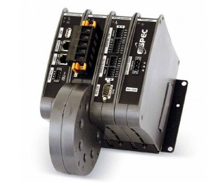

Elspec
- EQUALIZER
- ACTIVAR
- G4400 BLACKBOX
- G4500 BLACKBOX
- G3500 BLACKBOX
EQUALIZERA world leading optimal solution for electrical energy savings and power quality solutions, the Equalizer is the world's fastest real-time power quality enhancement system optimizes power factor correction, energy savings, voltage support, harmonic filtration, and more, for a variety of dynamic loads. Benefits: - Cycle-by-cycle accurate reactive power compensation Energy Savings
- Transient-Free solid-state capacitors switching
- Harmonic filtration (optional)
- Includes comprehensive Power Quality Analyzer
- Self testing and comprehensive monitoring
- Long lifetime expectancy
- Low maintenance or “maintenance free”
- Voltages up to 690V or higher using step up transformer
- Unlimited kVAr delivery rating
EQUALIZER RTThe Equalizer RT, a transient free static compensation system, modified in order to boost supplied kVAr capacity for short time voltage dips applications
The Equalizer RT is designed to deliver substantial reactive power even during a very deep voltage sag. EQUALIZER ST: THE ULTIMATE MOTOR START-UP SOLUTION
The EQUALIZER-ST is a real-time, dynamic reactive power compensation system for medium and low voltage drop motor start-ups that utilizes a proven industrial technology to provide the ultimate motor protection control solution for the challenges related to large motor start-ups.ACTIVARA superior cost-effective alternative to electro-mechanical power factor correction banks, the Activar offers fast compensation, unlimited number of transient free operations and a unique self-testing and comprehensive reporting feature.Benefits: - Fast & Transient-Free switching
- Fast Compensation (1 second typical, 3-4 seconds maximum), unlimited number of operations and transient-free
- Low-cost solution for replacing electro-mechanical Power Factor solutions
- Prevents damage to sensitive equipment
- Saves Energy
- Harmonic Filtration
- Accurate power factor control even with harmonics present
- Extremely long life expectancy
- Considerably low temperature rises, due to unique scan mode
- Integral power quality analyzer
- Unique self-testing and comprehensive reporting feature
- Easy upgrade to the Equalizer
G4400 BLACKBOX Fixed Power Quality AnalyzerThe revolutionary Elspec G4000 BLACKBOX is the next generation in power quality analyzers. The G4K provides accurate detection and isolation of power quality monitoring for effective preventive maintenance.No Triggers/No Thresholds meaning no missed events. The G4k records all network parameters for up to a year.In addition to real-time monitoring with PQZIP, a patented data compression algorithm, the G4000 Power Quality Analyzer BLACKBOX stores onboard all the waveforms of every network cycle for up to a year at up to 1,024 samples per cycle resolution, eliminating the need for thresholds, triggers, or parameter setting for logging. The G4000 BLACKBOX Power Quality Analyzer calculates RMS, harmonics, and all desired values from waveforms in post-processing. The total number of parameters is practically unlimited. A unique time synchronization algorithm assures that logged data from multiple units is synchronized and displayed on the same time scale with typical 0.1 ms resolution. The results? Every event on a grid is accurately analyzed for precise root cause analysis and traced to its source.
· Absolutely identifies all power quality events· The ultimate tool for definitive root cause analysis· Up to one year, recording of all network parameters at up to 1,024/cycle resolution· No Triggers/No Thresholds meaning no missed events· Patent-pending PQZIP compression technology algorithm with typical 1000:1 compress ratio prevents data gaps by real-time compression performed independent of the sampling· Cycle-by-cycle RMS values, frequency and harmonics trends· Use of 3rd party communication routers· Modular design supports up to 9 modules· 2 parallel harmonics computations IEC 61000-4-30 Class A & cycle-by-cycle, up to the 511th harmony· Full scale readings 10x from nominal voltages and currents at high accuracy· Standard compliance testing to EN 50160, IEC 61000-4-15 and others· Built-in WEB server for remote monitoring using standard web browser· 2 Integral OPC servers (DA and AE) for seamless integration with SCADA systems· 2 fast Ethernet ports (100 MBit) with Power Over Ethernet (POE) device and source· USB and RS-485 ports· AC/DC power supply with up to 25 second ride through at power loss· Modbus over TCP/IP· DNP· Revenue Metering· Storage Capacity: o G4410: 128 MBo G4420: 4 GBo G4430: 16 GB
Benefits:G4500 BLACKBOX Portable Power Quality AnalyzerPower Quality in High Definition
Built on the same innovative technology as the BLACKBOX fixed Power Quality Meter (PQA), the Elspec G4500 BLACKBOX Portable Digital Power Meter, with its continuous onboard waveform logging, is the most advanced Voltage recorder on the market. The G4500 BLACKBOX has the power to determine the root cause of all Power Quality (PQ) issues, so plug it in and never miss another event.The wireless BLACKBOX Portable Digital Power Meter, coined POWER QUALITY (PQ) IN HIGH DEFINITION, logs and stores all information all the time for more than a year at high accuracy, allowing no gaps in data recording.
With a built-in 802.11b/g access point and built-in Ethernet router, the BLACKBOX Portable Power Quality Meter allows remote analysis from anywhere. Benefits:- No Thresholds/ No Missed Events: Continuous 1+ year logging of all network parameters.
- Captures Everything: Cycle by Cycle RMS values, frequency, harmonics, and trends.
- Sampling Rate: Voltage up to 1024 Samples per cycle. Current up to 256 Samples per Cycle.
- Quickly Retrieve Data: Built-in Web server for remote monitoring using a standard Web browser.
- Integrated I/O and Compression
- Rechargeable Power Supply: Built in battery with up to 2 hours of stand-by power
Plug and Play: Automatic set up with self-identifying probes. - Remote Connectivity and Diagnostics: Wireless 802.11g access point.
- Software Included: PQSCADA and Investigator Power Analysis software with automatic EN50160 and customized report generation.
- Full Compliance with IEC6100-4-30 Class A
All InclusiveEverything you need in a Portable Power Quality Solution & more:- 1 X Custom Clamp 3-Flexible Current Probes
- 1 X Custom Clamp 1-Flexible Current Probes
- Voltage Leads (Automatically Detected)
- DC Voltage Cords
- Durable Carrying Case
- Rechargeable Power Supply (2 Hours Standby)
- Wireless Network
- PQSCADA/Investigator Software CD
- Mobile Analysis Lab
G3500 BLACKBOX Portable Power Quality AnalyzerPower Quality in High DefinitionBuilt on the same innovative technology as the BLACKBOX fixed Power Quality Meter (PQA), the Elspec G3500 BLACKBOX Portable Digital Power Meter, with its continuous onboard waveform logging, is a proud addition to the distinguished BLACKBOX family of the most advanced power meters on the market. The G3500 BLACKBOX has the power to determine the root cause of all Power Quality (PQ) issues, so plug it in and never miss another event. The G3500 BLACKBOX Portable Digital Power Meter, coined POWER QUALITY (PQ) IN HIGH DEFINITION, logs and stores all information all the time allowing no gaps in data recording. This new generation G3500 has all of the most desired features of a Portable Power Quality Analyzer, but at a price that is designed to remain competitive in the Power Meter market. Benefits: - No Thresholds/ No Missed Events
- Captures Everything: Cycle by Cycle RMS values, frequency, harmonics, and trends.
- Sampling Rate: Voltage up to 512 Samples per cycle. Current up to 256 Samples per Cycle.
- Rechargeable Power Supply: Built in battery with up to 2 hours of stand-by power
- Plug and Play: Automatic set up with self-identifying probes.
- Software Included: PQSCADA and Investigator Power Analysis software with automatic EN50160 and customized report generation.
- Full Compliance with IEC6100-4-30 Class A
All InclusiveEverything you need in a Portable Power Quality Solution & more:- 1 X Custom Clamp 3-Flexible Current Probes
- 1 X Custom Clamp 1-Flexible Current Probes
- Voltage Leads (Automatically Detected)
- Durable Carrying Case
- Rechargeable Power Supply (2 Hours Standby)
- PQSCADA/Investigator Software CD
- Mobile Analysis Lab
{kind=link}
{kind=link}
{kind=link}
{kind=link}
{kind=link}